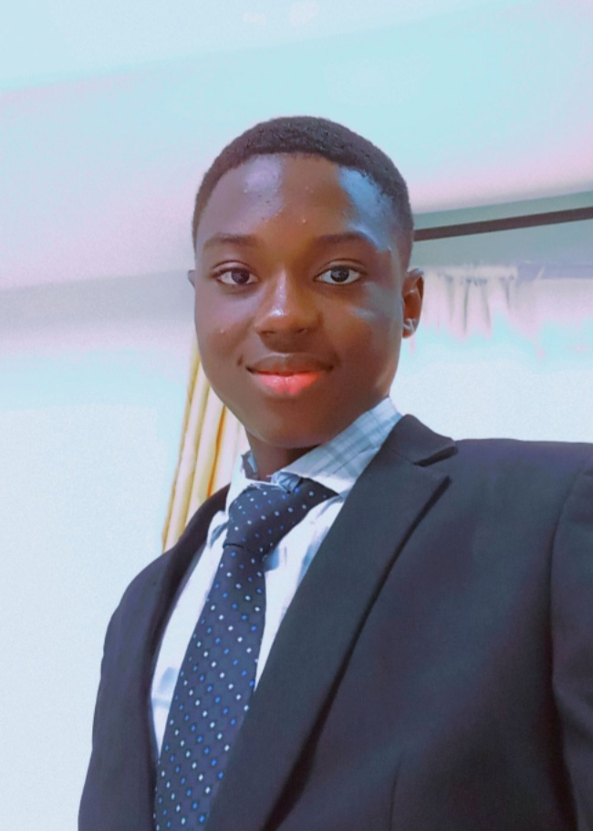

|
About Me
|
|
|  |
Showunmi Ebunoluwa, a student of Covenant University. He loves learning about different aspects of programming He took this love and used it to start learning the very basics of coding and web development. He is a hardworking young man, ready to give his full devotion to any tasks and assignments assigned to him. |
I possess